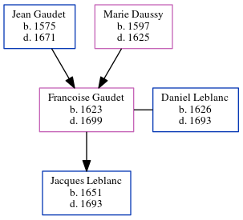

Francoise Leblanc (née Gaudet) 1623 - 1699
[ Home ] | [ Calendar ] | [ Surnames Index ] | [ Census Index ] | [ Family History ]The child of Jean Gaudet and Marie Daussy, Francoise Gaudet, the 10 times great-grandmother of Michele Copp (née Phillips), was born in Loudun, Vienne, Poitou-Charentes, France in 16231 and married Daniel Leblanc (with whom she had 1 child, Jacques) in Ac in 16501.
She died in 1699 in Port Royal, , New Brunswick, Canada.
Parents
- Jean was born in 1575
- Marie was born in 1597
Children
- Jacques was born in 1651
Citations
- U.S. and International Marriage Records, 1560-1900 Online publication - Provo, UT, USA: The Generations Network, Inc., 2004.Original data - This unique collection of records was extracted from a variety of sources including family group sheets and electronic databases. Originally, the information was deriv
Family Tree
Generated by ged2site. Last updated on Jun 10, 2024